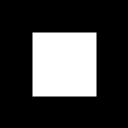
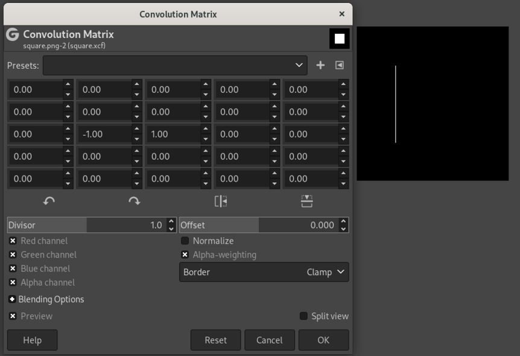
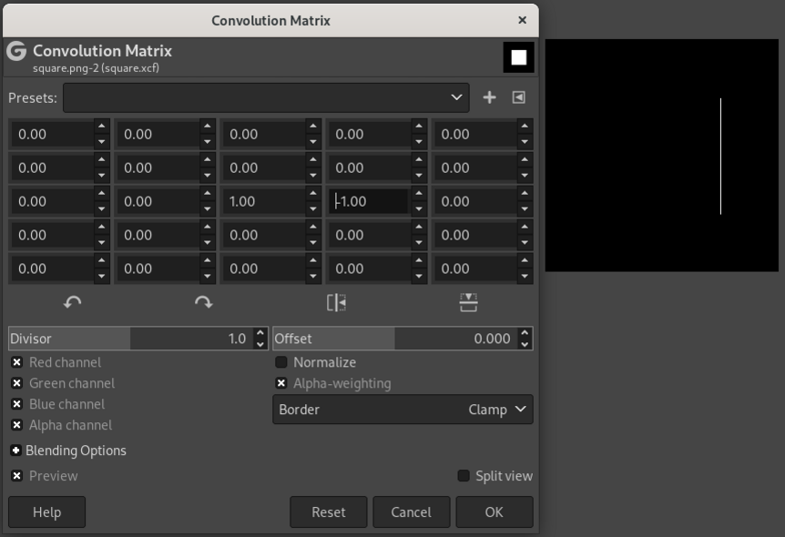

library(torch)
convnet <- nn_module(
"convnet",
initialize = function() {
# nn_conv2d(in_channels, out_channels, kernel_size)
self$conv1 <- nn_conv2d(1, 16, 3)
self$conv2 <- nn_conv2d(16, 32, 3)
self$conv3 <- nn_conv2d(32, 64, 3)
self$output <- nn_linear(2304, 3)
},
forward = function(x) {
x %>%
self$conv1() %>%
nnf_relu() %>%
nnf_max_pool2d(2) %>%
self$conv2() %>%
nnf_relu() %>%
nnf_max_pool2d(2) %>%
self$conv3() %>%
nnf_relu() %>%
nnf_max_pool2d(2) %>%
torch_flatten(start_dim = 2) %>%
self$output()
}
)
model <- convnet()15 A first go at image classification
15.1 What does it take to classify an image?
Think about how we, as human beings, can say “that’s a cat”, or: “this is a dog”. No conscious processing is required. (Usually, that is.)
Why? The neuroscience, and cognitive psychology, involved are definitely out of scope for this book; but on a high level, we can assume that there are at least two prerequisites: First, that our visual system be able to build up complex representations out of lower-level ones, and second, that we have a set of concepts available we can map those high-level representations to. Presumably, then, an algorithm expected to do the same thing needs to be endowed with these same capabilities.
In the context of this chapter, dedicated to image classification, the second prerequisite is satisfied gratuitously. Classification being a variant of supervised machine learning, the concepts are given by means of the targets. The first, however, is all-important. We can again distinguish two components: the capability to detect low-level features, and that to successively compose them into higher-level ones.
Take a simple example. What would be required to identify a rectangle? A rectangle consists of edges: straight-ish borders of sort where something in the visual impression (color, for example) changes. To start with, then, the algorithm would have to be able to identify a single edge. That “edge extractor”, as we might call it, is going to mark all four edges in the image. In this case, no further composition of features is needed; we can directly infer the concept.
On the other hand, assume the image were showing a house built of bricks. Then, there would be many rectangles, together forming a wall of the house; another rectangle, the door; and a few further ones, the windows. Maybe there’d be a different arrangement of edges, triangle-shaped, the roof. Meaning, an edge detector is not enough: We also need a “rectangle detector”, a “triangle detector”, a “wall detector”, a “roof detector” … and so on. Evidently, these detectors can’t all be programmed up front. They’ll have to be emergent properties of the algorithm: the neural network, in our case.
15.2 Neural networks for feature detection and feature emergence
The way we’ve spelled out the requirements, a neural network for image classification needs to (1) be able to detect features, and (2) build up a hierarchy of such. Networks being networks, we can safely assume that (1) will be taken care of by a specialized layer (module), while (2) will be made possible by chaining several layers.
15.2.1 Detecting low-level features with cross-correlation
This chapter is about “convolutional” neural networks; the specialized module in question is the “convolutional” one. Why, then, am I talking about cross-correlation? It’s because what neural-network people refer to as convolution, technically is cross-correlation. (Don’t worry – I’ll be making the distinction just here, in the conceptual introduction; afterwards I’ll be saying “convolution”, just like everyone else.)
So why am I insisting? It is for two reasons. First, this book actually has a chapter on convolution – the “real one”; it figures in part three right between matrix operations and the Discrete Fourier Transform. Second, while in a formal sense the difference may be small, semantically as well as in terms of mathematical status, convolution and cross-correlation are decidedly distinct. In broad strokes:
Convolution may well be the most fundamental operation in all of signal processing, fundamental in the way addition and multiplication are. It can act as a filter, a signal-space transformation intended to achieve a desired result. For example, a moving average filter can be programmed as a convolution. So can, however, something quite the opposite: a filter that emphasizes differences. (An edge enhancer would be an example of the latter.)
Cross-correlation, in contrast, is more specialized. It finds things, or put differently: It spots similarities. This is what is needed in image recognition. To demonstrate how it works, we start in a single dimension.
15.2.1.1 Cross-correlation in one dimension
Assume we have a signal – a univariate time series – that looks like this: 0,1,1,1,-1,0,-1,-1,1,1,1,-1. We want to find locations where a one occurs three times in a row. To that end, we make use of a filter that, too, has three ones in a row: 1,1,1.
That filter, also called a kernel, is going to slide over the input sequence, producing an output value at every location. To be precise: The output value in question will be mapped to the input value co-located with the kernel’s central value. How, then, can we obtain an output for the very first input value, which has no way of being mapped to the center of the kernel? In order for this to work, the input sequence is padded with zeroes: one in front, and one at the end. The new signal looks like this: 0,0,1,1,1,-1,0,-1,-1,1,1,1,-1,0 .
Now, we have the kernel sliding over the signal. Like so:
0,0,1,1,1,-1,0,-1,-1,1,1,1,-1,0
1,1,1
0,0,1,1,1,-1,0,-1,-1,1,1,1,-1,0
1,1,1
0,0,1,1,1,-1,0,-1,-1,1,1,1,-1,0
1,1, 1And so on.
At every position, products are computed between the mapped input and kernel values, and then, those products are added up, to yield the output value at the central position. For example, this is what gets computed at the very first matching: 0*1 + 0*1 + 1*1 = 1. Appending the outputs, we get a new sequence: 1,2,3,1,0,-2,-2,-1,1,3,1,0 .
How does this help in finding three consecutive ones? Well, a three can only result when the kernel has found such a location. Thus, with that choice of kernel, we take every occurrence of 3 in the output as the center of the target sequence we’re looking for.
15.2.1.2 Cross-correlation in two dimensions
This chapter is about images; how does that logic carry over to two dimensions?
Everything works just the same; it’s just that now, the input signal extends over two dimensions, and the kernel is two-dimensional, as well. Again, the input is padded; with a kernel of size 3 x 3, for example, one row is added on top and bottom each, and one column, on the left and the right. Again, the kernel slides over the image, row by row and column by column. At each point it computes an aggregate that is the sum of point-wise products. Mathematically, that’s a dot product.
To get a feel for how this works, we look at a bare-bones example: a white square on black background (fig. 15.1).

Nicely, the open-source graphics program Gimp has a feature that allows one to experiment with custom filters (“Filters” -> “Custom” -> “Convolution matrix”). We can construct kernels and directly examine their effects.
Say we want to find the left edge of the square. We are looking for locations where the color changes, horizontally, from black to white. This can be achieved with a 3x3 kernel that looks like this (fig. 15.2):
0 0 0
-1 1 0
0 0 0This kernel is similar to the edge type we’re interested in in that it has, in the second row, a horizontal transition from -1 to 1.
Analogously, kernels can be constructed that extract the right (fig. 15.3), top (fig. 15.4), and bottom (fig. 15.5) edges.




To understand this numerically, we can simulate a tiny image (fig. 15.6, left). The numbers represent a grayscale image with values ranging from 0 to 255. To its right, we have the kernel; this is the one we used to detect the left edge. As a result of having that kernel slide over the image, we obtain the “image” on the right. 0 being the lowest possible value, negative pixels end up black, and we obtain a white edge on black background, just like we saw with Gimp.

Now, we’ve talked a lot about constructing kernels. Neural networks are all about learning feature detectors, not having them programmed up-front. Naturally, then, learning a filter means having a layer type whose weights embody this logic.
15.2.1.3 Convolutional layers in torch
So far, the only layer type we’ve seen that learns weights is nn_linear(). nn_linear() performs an affine operation: It takes an input tensor, matrix-multiplies it by its weight matrix \(\mathbf{W}\), and adds the bias vector \(\mathbf{b}\). While there is just a single bias per layer, independently of the number of neurons it has, this is not the case for the weights: There is a unique connection between each feature in the input tensor and each of the layer’s neurons.
This is not true for nn_conv2d(), torch’s (two-dimensional) convolution1 layer.
Back to how convolutional layers differ from linear ones. We’ve already seen what the layer’s effect is supposed to be: A kernel should slide over its input, generating an output value at each location. Now the kernel, for a convolutional layer, is exactly its weight matrix. The kernel sliding over an input image means that weights are re-used every time it shifts its position. Thus, the number of weights is determined by the size of the kernel, not the size of the input. As a consequence, a convolutional layer is way more economical than a linear one.
Another way to express this is the following.
Conceptually, we are looking for the same thing, wherever it appears in the image. Take the most standard of standard image classification benchmarks, MNIST. It is about classifying images of the Arabic numerals 0-9. Say we want to learn the shape for a 2. The 2 could be right in the middle of the image, or it could be shifted to the left (say). An algorithm should be able to recognize it no matter where. Additional requirements depend on the task. If all we need to be able to do is say “that’s a 2”, we’re good to use an algorithm that is translation-invariant: It outputs the same thing independently of any shifts that may have occurred. For classification, that’s just fine: A 2 is a 2 is a 2.
Another important task, though, is image segmentation (something we’ll look at in an upcoming chapter). In segmentation, we want to mark all pixels in an image according to whether they are part of some object or not. Think tumor cells, for example. The 2 is still a 2, but we do need the information where in the image it is located. The algorithm to use now has to be translation-equivariant: If a shift has occurred, the target is still detected, but at a new location. And thinking about the convolution algorithm, translation-equivariant is exactly what it is.
So now, we have an idea how torch lets us detect individual features in an image. This gives us the first in our list of desiderates. The second is about combining feature detectors, that is, building up a hierarchy, in order to discern more and more specialized types of objects. This means that from a single layer, we move on to a network of layers.
15.2.2 Build up feature hierarchies
A prototypical convolutional neural network for image classification will chain blocks composed of three types of layers: convolutional ones (nn_conv1d(), nn_conv2d(), or nn_conv3d(), depending on the dimension we’re in), activation layers (e.g., nn_relu()), and pooling layers (e.g., nn_maxpool1d(), nn_maxpool2d(), nn_maxpool3d()).
The only type we haven’t talked about yet are the pooling layers. Just like activation layers, these don’t have any parameters; what they do is aggregate neighboring tensor values. The size of the region to summarize is specified in the layer constructor’s parameters. Various types of aggregation are available: nn_maxpool<n>d() picks the highest value, while nn_avg_pool<n>d() computes the average.
Why would one want to perform these kinds of aggregation? Practically speaking, one has to if one wants to arrive at a per-image (as opposed to per-pixel) output. But we can’t just choose any way of aggregating spatially-arranged values. Picture, for example, an average where the interior pixels of an image patch were weighted higher than the exterior ones. Then, it would make a difference where in the patch some object was located. But for classification, this should not be the case. For classification, as opposed to segmentation, we want translation invariance – not just equivariance, the property we just said convolution has. And translation-invariant is just what layers like nn_maxpool2d(), nn_avgpool2d(), etc. are.
15.2.2.1 A prototypical convnet
A template for a convolutional network, called “convnet” from now on, could thus look as below. To preempt any possible confusion: Even though, above, I was talking about three types of layers, there really is just one type in the code: the convolutional one. For brevity, both ReLU activation and max pooling are realized as functions instead.
Here is a possible template. It is not intended as a recommendation (as to number of filters, kernel size, or other hyperparameters, for example) – just to illustrate the mechanics. More detailed comments follow.
To understand what is going on, we need to know how images are represented in torch. By itself, an image is represented as a three-dimensional tensor, with one dimension indexing into available channels (package luz)} (one for gray-scale images, three for RGB, possibly more for different kinds of imaging outputs), and the other two, corresponding to the two spatial axes, height (rows) and width (columns). In deep learning, we work with batches; thus, there is an additional dimension – the very first one – that refers to batch number.
Let’s look at an example image that may be used with the above template:
img <- torch_randn(1, 1, 64, 64)What we have here is an image, or more precisely, a batch containing a single image, that has a single channel, and is of size 64 x 64.
That said, the above template assumes the following:
- The input image has one channel. That’s why the first argument to
nn_conv2d()is1when we construct the first of the conv layers. (No assumptions are made, on the other hand, about the size of the input image.) - We want to distinguish between three different target classes. This means that the output layer, a linear module, needs to have three output channels.
To test the code, we can call the un-trained model on our example image:
model(img)torch_tensor
0.01 *
6.4821 3.4166 -5.6050
[ CPUFloatType{1,3} ][ grad_fn = <AddmmBackward0> ]One final note about that template. When you were reading the code above, one line that might have stood out is the following:
self$output <- nn_linear(2304, 3)How did that 2304, the number of input connections to nn_linear(), come about? It is the result of (1) a number of operations that each reduce spatial resolution, plus (2) a flattening operation that removes all dimensional information besides the batch dimension. This will make more sense once we’ve discussed the arguments to the layers in question. But one thing needs to be said upfront: If this sounds like magic, there is a simple means to make the magic go away. Namely, a simple way to find out about tensor shapes at any stage in a network is to comment all subsequent actions in forward(), and call the modified model. Naturally, this should not replace understanding, but it’s a great way not to lose one’s nerves when encountering shape errors.
Now, about layer arguments.
15.2.2.2 Arguments to nn_conv2d()
Above, we passed three arguments to nn_conv2d(): in_channels, out_channels, and kernel_size. This is not an exhaustive list of parameters, though. The remaining ones all have default values, but it is important to know about their existence. We’re going to elaborate on three of them, all of whom you’re likely to play with applying the template to some concrete task. All of them affect output size. So do two of the three mandatory arguments, out_channels and kernel_size:
out_channelsrefers to the number of kernels (often called filters, in this context) learned. Its value affects the second of the four dimensions of the output tensor; it does not affect spatial resolution, though. Learning more filters adds capacity to the network, as it increases the number of weights.kernel_size, on the other hand, does alter spatial resolution – unless its value is 1, in which case the kernel never exceeds image boundaries. Likeout_channels, it is a candidate for experimentation. In general, though, it is advisable to keep kernel size rather small, and chain a larger number of convolutional layers, instead of enlarging kernel size in a “shallow” network.
Now for the three non-mandatory arguments to explore.
paddingis something we’ve encountered before. Any kernel that extends over more than a single pixel will move outside the valid region when sliding over an image; the more, the bigger the kernel. General options are to (1) either pad the image (with zeroes, for example), or (2) compute the dot product only where possible. In the latter case, spatial resolution will decrease. That need not in itself be a problem; like so many things, it’s a matter of experimentation. By default,torchdoes not pad images; however by passing a value greater than0forpadding, you can ensure that spatial resolution is preserved, whatever the kernel size. Compare fig. 15.7, reproduced from a nice compilation by Dumoulin and Visin (2016), to see the effect of padding.striderefers to the way a kernel moves over the image. With astridegreater than1, it takes “leaps” of sorts – see fig. 15.8. This results in fewer “snapshots” being taken. As a result, spatial resolution decreases.A setting of
dilationgreater than1,too, results in fewer snapshots, but for a different reason. Now, it’s not that the kernel moves faster. Instead, the pixels it is applied to are not adjacent anymore. They’re spread out – how much, depends on the argument’s value. See fig. 15.9.


strides. Copyright Dumoulin and Visin (2016), reproduced under MIT license.
dilation. Copyright Dumoulin and Visin (2016), reproduced under MIT license.For non-mandatory arguments padding, stride, and dilation, tbl. 15.1 has a summary of defaults and effects.
| Argument | Default | Action (if non-default) |
|---|---|---|
padding |
0 | virtual rows/columns added around the image |
stride |
1 | kernel moves across image at bigger step size (“jumps” over pixels) |
dilation |
1 | kernel is applied to spread-out image pixels (“holes” in kernel) |
15.2.2.3 Arguments to pooling layers
Pooling layers compute aggregates over neighboring pixels. The number of pixels of aggregate over in every dimension is specified in the layer constructor’s first argument (alternatively, the corresponding function’s second argument). Slightly misleadingly, that argument is called kernel_size, although there are no weights involved: For example, in the above template, we were unconditionally taking the maximum pixel value over regions of size 2 x 2.
In analogy to convolution layers, pooling layers also accept arguments padding and stride. However, they are seldom used.
15.2.2.4 Zooming out
We’ve talked a lot about layers and their arguments. Let’s zoom out and think back about the general template, and what it is supposed to achieve.
We are chaining blocks that, each, perform a convolution, apply a non-linearity, and spatially aggregate the result. Each block’s weights act as feature detectors, and every block but the first receives as input something that already is the result of applying one or more feature detectors. The magical thing that happens, and the reason behind the success of convnets, is that by chaining layers, a hierarchy of features is built. Early layers detect edges and textures, later ones, patterns of various complexity, and the final ones, objects and parts of objects (see fig. 15.10, a beautiful visualization reproduced from Olah, Mordvintsev, and Schubert (2017)).

We now know enough about coding convnets and how they work to explore a real example.
15.3 Classification on Tiny Imagenet
Before we start coding, let me anchor your expectations. In this chapter, we design and train a basic convnet from scratch. As to data pre-processing, we do what is needed, not more. In the next two chapters, we’ll learn about common techniques used to improve model training, in terms of quality as well as speed. Once we’ve covered those, we’ll pick up right where this chapter ended, and apply a few of those techniques to the present task. Therefore, what we’re doing here is build a baseline, to be used in comparison with more sophisticated approaches. This is “just” a beginning.
15.3.1 Data pre-processing
In addition to torch and luz, we load a third package from the torch ecosystem: torchvision. torchvision provides operations on images, as well as a set of pre-trained models and common benchmark datasets.
library(torch)
library(torchvision)
library(luz)The dataset we use is “Tiny Imagenet”. Tiny Imagenet is a subset of ImageNet, a gigantic collection of more than fourteen million images, initially made popular through the “ImageNet Large Scale Visual Recognition Challenge” that was run between 2012 and 2017. In the challenge, the most popular task was multi-class classification, with one thousand different classes to choose from.
One thousand classes is a lot; and with images typically being processed at a resolution of 256 x 256, training a model takes a lot of time, even on luxurious hardware. For that reason, a more manageable version was created as part of a popular Stanford class on deep learning for images, Convolutional Neural Networks for Visual Recognition (CS231n). The condensed dataset has two hundred classes, with five hundred training images per class. Two hundred classes, that’s still a lot! (Most introductory examples will do “cats vs. dogs”, or some other binary problem.) Thus, it’s not an easy task.
We start by downloading the data.
set.seed(777)
torch_manual_seed(777)
dir <- "~/.torch-datasets"
train_ds <- tiny_imagenet_dataset(
dir,
download = TRUE,
transform = function(x) {
x %>%
transform_to_tensor()
}
)
valid_ds <- tiny_imagenet_dataset(
dir,
split = "val",
transform = function(x) {
x %>%
transform_to_tensor()
}
)Notice how tiny_imagenet_dataset() takes an argument called transform. This is used to specify operations to be performed as part of the input pipeline. Here, not much is happening: We just convert images to something we can work with, tensors. However, very soon we’ll see this argument used to specify sequences of transformations such as resizing, cropping, rotation, and more.
What remains to be done is create the data loaders.
train_dl <- dataloader(train_ds,
batch_size = 128,
shuffle = TRUE
)
valid_dl <- dataloader(valid_ds, batch_size = 128)Images are RGB, and of size 64 x 64:
batch <- train_dl %>%
dataloader_make_iter() %>%
dataloader_next()
dim(batch$x)[1] 128 3 64 64Classes are integers between 1 to 200:
batch$ytorch_tensor
172
17
76
78
111
57
8
166
146
114
41
28
138
98
57
98
25
148
166
135
31
182
48
184
160
166
40
115
161
21
... [the output was truncated (use n=-1 to disable)]
[ CPULongType{128} ]Now we define a convnet, and train it with luz.
15.3.2 Image classification from scratch
Here is a prototypical convnet, modeled after our template, but more powerful.
In addition to what we’ve seen already, the code illustrates a way of modularizing the code, arranging layers into three groups:
a (large) feature detector that, as a whole, is shift-equivariant;
a shift-invariant pooling layer (
nn_adaptive_avg_pool2d()) that allows us to specify a desired output resolution; anda feed-forward neural network that takes the computed features and uses them to produce final scores: two hundred values, corresponding to two hundred classes, for each item in the batch.
convnet <- nn_module(
"convnet",
initialize = function() {
self$features <- nn_sequential(
nn_conv2d(3, 64, kernel_size = 3, padding = 1),
nn_relu(),
nn_max_pool2d(kernel_size = 2),
nn_conv2d(64, 128, kernel_size = 3, padding = 1),
nn_relu(),
nn_max_pool2d(kernel_size = 2),
nn_conv2d(128, 256, kernel_size = 3, padding = 1),
nn_relu(),
nn_max_pool2d(kernel_size = 2),
nn_conv2d(256, 512, kernel_size = 3, padding = 1),
nn_relu(),
nn_max_pool2d(kernel_size = 2),
nn_conv2d(512, 1024, kernel_size = 3, padding = 1),
nn_relu(),
nn_adaptive_avg_pool2d(c(1, 1))
)
self$classifier <- nn_sequential(
nn_linear(1024, 1024),
nn_relu(),
nn_linear(1024, 1024),
nn_relu(),
nn_linear(1024, 200)
)
},
forward = function(x) {
x <- self$features(x)$squeeze()
x <- self$classifier(x)
x
}
)Now, we train the network. The classifier outputs raw logits, not probabilities; this means we need to make use of nn_cross_entropy_loss(). We train for fifty epochs:
fitted <- convnet %>%
setup(
loss = nn_cross_entropy_loss(),
optimizer = optim_adam,
metrics = list(
luz_metric_accuracy()
)
) %>%
fit(train_dl,
epochs = 50,
valid_data = valid_dl,
verbose = TRUE
)After fifty epochs, this resulted in accuracy values of 0.92 and 0.22, on the training and test sets, respectively. This is quite a difference! On the training set, this model is near-perfect; on the test set, it only gets up to every fourth image correct.
Epoch 1/50
Train metrics: Loss: 5.0822 - Acc: 0.0146
Valid metrics: Loss: 4.8564 - Acc: 0.0269
Epoch 2/50
Train metrics: Loss: 4.5545 - Acc: 0.0571
Valid metrics: Loss: 4.2592 - Acc: 0.0904
Epoch 3/50
Train metrics: Loss: 4.0727 - Acc: 0.1122
Valid metrics: Loss: 3.9097 - Acc: 0.1381
...
...
Epoch 48/50
Train metrics: Loss: 0.3033 - Acc: 0.9064
Valid metrics: Loss: 10.2999 - Acc: 0.2188
Epoch 49/50
Train metrics: Loss: 0.2932 - Acc: 0.9098
Valid metrics: Loss: 10.7348 - Acc: 0.222
Epoch 50/50
Train metrics: Loss: 0.2733 - Acc: 0.9152
Valid metrics: Loss: 10.641 - Acc: 0.2204With two hundred options to choose from, “every fourth” does not even seem so bad; however, looking at the enormous difference between both metrics, something is not quite right. The model has severely overfitted to the training set – memorized the training samples, in other words. Overfitting is not specific to deep learning; it is the nemesis of all of machine learning. We’ll consecrate the whole next chapter to this topic.
Before we end, though, let’s see how we would use luz to obtain predictions:
preds <- last %>% predict(valid_dl)predict() directly returns what is output by the model: two hundred non-normalized scores for each item. That’s because the model’s last layer is a linear module, with no activation applied. (Remember how the loss function, nn_cross_entropy_loss(), applies a softmax operation before calculating cross-entropy.)
Now, we could certainly call nnf_softmax() ourselves, converting outputs from predict() to probabilities:
preds <- nnf_softmax(preds, dim = 2)However, if we’re just interested in determining the most likely class, we can as well skip the normalization step, and directly pick the highest value for each batch item:
torch_argmax(preds, dim = 2)torch_tensor
55
1
1
1
1
1
1
89
45
1
1
19
1
190
14
1
185
1
1
150
77
37
131
193
80
1
1
45
1
131
... [the output was truncated (use n=-1 to disable)]
[ CUDALongType{10000} ]We could now go on to compare predictions with actual classes, looking for inspiration on what could be done better. But at this stage, there is still a lot that can be done better! We will return to this application in due time, but first, we need to learn about overfitting, and ways to speed up model training.
Like I said above, I’ll be using the established term “convolution” from now on. Actually – given that weights are learned – it does not matter that much anyway.↩︎